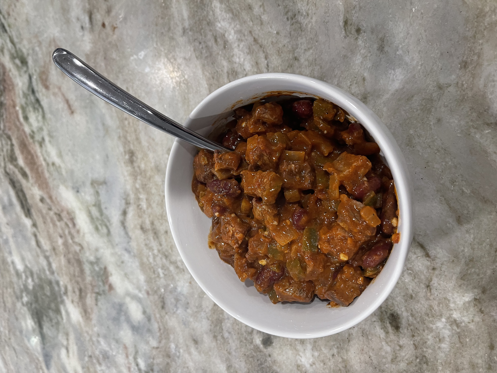

Chili

Chili with barbecued chuck roast.
This recipes requires a charcoal grill as it is made with chuck roast cooked
over charcoal that is then cut into small pieces and cooked in a pot with
various seasonings.
This chili can be rather spicy but I will indicate which ingredients can
be left out or substituted for those who prefer a milder experience
Ingredients
- 4 pounds of beef chuck roast
- 30 ounces of canned kidney beans)
- 16 ounces of crushed tomatoes
- 2 tbsp minced garlic
- Two diced onions (I suggest one yellow and one red onion each)
- 1 tbsp of chili powder
- 1 tbsp of ancho phili powder
- 1 tbsp of hot chili powder (replace with regular Chili powder if desired)
- 1 tsp of cayenne powder (leave this out if you'd prefer)
- 2 tbsp of ground cumin
- 2 tbsp of paprika
- 2 tbsp of kosher salt
- 2 tbsp of white wine vinegar
- Half a cup of diced jalapenos (you can adjust this for desired heat)
- 1 tbsp of red pepper flakes (add another tbsp if you want it spicier)
- 1 tbsp of brown sugar
- 1 tbsp of Italian seasoning
- 1 tsp of black pepper
- 1 tbsp of corn starch to thicken (this can be adjusted for desired thickness)
Steps
- Start the charcoal and cut the chuck into reasonably thin pieces so it chars well.
- Salt the meat and cook it until it's been charred and softened.
- While the meat is cooking mix the listed ingredients and put them in a pot.
- When the meat is done cut it into the smallest pieces you can and add it to the pot.
- Simmer on the lowest setting for about 45 minutes.
- Let the chili sit until it is cool enough to eat.
Home